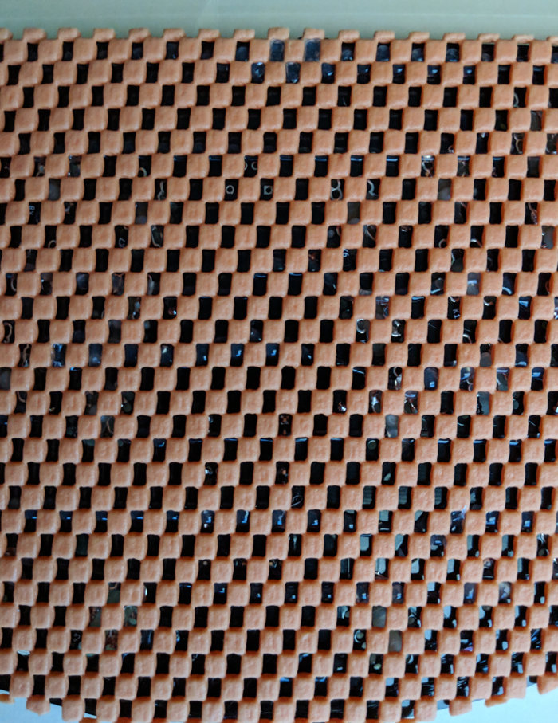

I’ve been writing a lot more than usual over the past year. Perhaps not writing on what I should be sometimes, but enough to where I’ve been doing much more reading, note-taking, and typing in the course of my work and my side projects (especially within the past 4 months). This led to a number of issues related to ergonomics or the lack thereof. My posture was horrible and it was starting to hurt my wrists, back and neck. So I started to make some major changes.
I trashed my old desk for a standing one which solved much of my physical discomfort, but my wrists were still in pain from typing. I tried taking more frequent breaks, but that failed to help me. However, a chance encounter was about to solve this issue in a big way; at a monthly coders meetup, I had the pleasure of meeting Troy Fletcher who introduced me to the 40% keyboard concept and his Signum ergonomic, DIY keyboards.
What follows is the rationale behind why I went with a custom keyboard and a guide on how I built the board.
Jumping in and Gathering the Materials
Needless to say, I was eager to try something new that may potentially alleviate my current pain issues. The idea of an ergonomic keyboard had always appealed to me, but the ones I wanted at the times I was considering buying them were always too expensive. This was a horrible error in judgment on my part; if your work is on computers and technology, you should invest in quality tools that protect you from injury. The second error in judgment was assuming that keyboards were just “the way things were” and that you really couldn’t do much about it. I wanted something that was smaller and mobile, but most ergonomic keyboards weren’t made to fit in a backpack for on-the-go usage.
A couple months ago, Troy walked me through the conceptualization of his keyboards and the advantages of making changes to the keyboard layout. It was an idea that was part of a fairly large and innovative subculture, both of which I must ashamedly admit I was woefully ignorant of. So I went home and immediately started to research these keyboards and their applicability to my needs. I found that these keyboards did several things for people:
- They reduced the amount of movement made on the keyboard
- The movements you do make are more efficient and minimal
- You can customize the layout to your needs
On a regular keyboard, you often have to reach or completely lift your hand to hit keys such as backspace, numbers, arrows, or functions. This means that you often have to twist your wrists and over-extend your fingers to hit keys. Since every person uses the keyboard differently and many people require unique task-related key combinations that they use frequently, having keys that are pre-programmed and don’t allow you to adjust their functionality can often be limiting to the user and ultimately less efficient. Often we assume the more keys we have, the more effecient we will be when this is just not true. The 40% layout allows you to keep your hands and wrists mostly neutral, making you faster and allowing you to maintain good posture. Having the key layout angled for your arms certainly adds to the ergonomics and usability of a keyboard over an extended period of time. After about a month of mulling over my options and the prices, I decided to go with Fletcher Signum 3.0 keyboard.
Materials
The bill of materials for the Signum 3.0 is fairly simple and easily described on the configuration page:
- 1 - Micro-controller (I used a Teensy 2.0)
- 48 - 1N4148 diodes
- 48 - Mechanical switches (Any Cherry or Alps compatible PCB mount)
- 48 - Key caps (ones that work for the switches you get)
- 1 – 12 x 6 inch shelf liner or any material to use as a base for the solder side of the board
You will also need these tools:
- Soldering iron
- 63/37 solder
- Eye protection
- Hot glue gun
- Hot glue
- Male Mini-B USB 2 to male USB 3 or USB-C
Now were ready to assemble this thing!
Building the Keyboard
Place the diodes in the board. Make sure that the cathode (the side with the black line) is placed in the hole with the square solder pad. After double-checking the polarity of the diodes, solder the diodes in place.
{kind=link}
Once you have the diodes installed and soldered, place the switches in the board with your key caps to test out how high or low you want you keys. Make sure to do this before you solder anything! It may help to load the keyboard layout while adjusting the key heights so you can also think about which keys you want to program in each layer.
{kind=link}
Double check your keys to make sure they are placed exactly as you want them. Proceed to solder them in place. Ensure that you apply enough solder to the switch terminal to secure them to the board. Notice that you may have to apply a generous amount of solder to these terminals and the available solder pads.
{kind=link}
Finally, you need to solder in you micro-controller. You only need to solder in 16 of the header pins for this to work with the Teensy, so check which ones before to start soldering. If you want to solder all header pins, you will need 31 header pins. Also, be careful not to damage any of the Teensy components.
{kind=link}
Do a final check of your solder joints to make sure the fillets look solid. The last thing you want is a cold solder joint!
Setting up the Board
I used the KB Firmware for the Teensy 2.0 to program my keyboard. I downloaded the JSON template available through the Fletcher setup website and loaded it into the KB Firmware website. Once here, I examined the key assignments and modified the layout for myself.
{kind=link}
There is a LOT to configure here, so take your time to see what you think works well for you. Once you are happy with the configuration:
- Go to the settings section to export the modified JSON template
- Go to the compile section and compile the HEX file which you need to flash the Teensy
- You can look at my setup materials if you would like an already modified JSON and compiled HEX files
Next, you will need to download the Teensy loader software. Download and extract the files for your system and then open the software.
{kind=link}
Load the HEX file into the Teensy loader software. Then follow the directions to program and reboot the device. Your keyboard should now be working!
{kind=link}
Finishing Touches
Once the keyboard is fully soldered, ensure the key caps as securely placed. Flip over the board and begin to place the liner or base covering onto the bottom of the board with hot glue. During this process, check your solder joints again to make sure they are good prior to covering them with hot glue and a base covering.
{kind=link}
And that is it! You can now repeat the programming process to make changes to the keyboard’s setup.
My Wish List for a Future Keyboard
In all, I’m very happy I went this direction. Not only did I support a cool project, but it was super fun building and hacking on a DIY keyboard. Plus I love the minimalist electronic aesthetic and the fact I can customize this board for any and every purpose I would need. Within a couple weeks, I was typing and coding faster with much less pain. I still time myself to make sure I’m taking breaks, but the keyboard has really helped my wrist pain.
However, there area few changes I’d like to see in future board versions. First, I’d like to see the key switch solder pads be changed to individual holes rather than the channels as seen on the Signum 3.0 and 3.1 boards. Individual holes would make soldering much easier and would make room for features such as LEDs for the key switches. Second, but not too important, would be the ability to change the angle for the sides of the keyboard. Many keyboards like this take the “separate sides connected with a cable” approach to optimizing the keyboard for the natural angle of your arms and your hands. However, keeping it in one piece with some method of rotating the sides from center would be great for a compact travel board (which has been done with previous Fletcher keyboard versions).
I can’t wait to see what they come out with next!
{kind=link}
References
My setup materials
This work is licensed under a Creative Commons Attribution-NonCommercial-ShareAlike 4.0 International License.